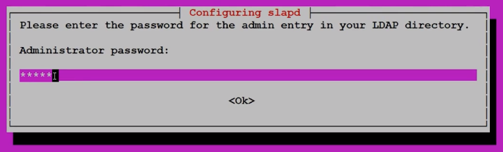
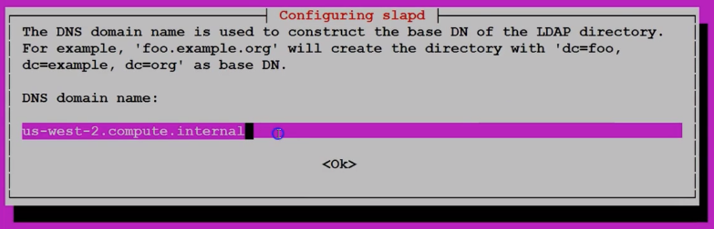
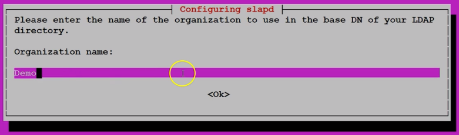
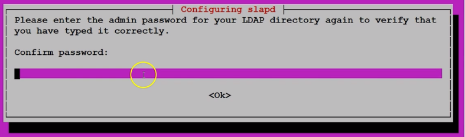
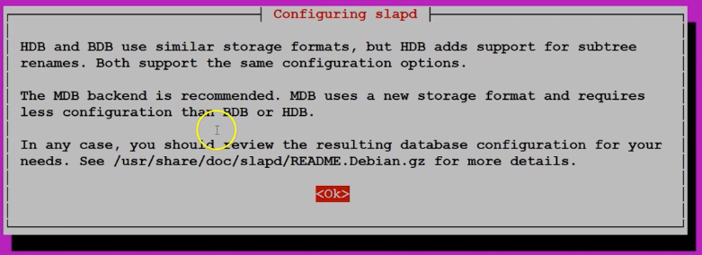
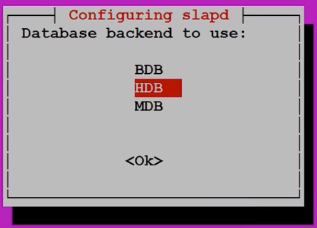
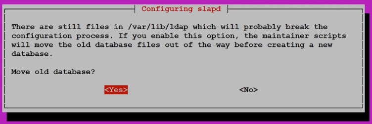
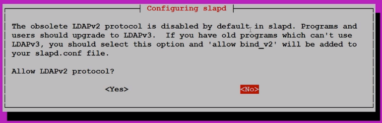

All LDAP connections occur through port 389 by default.
To setup an LDAP directory server install the following packages:
- slapd
- LDAP dynamic configuration
- No need to restart service each time we edit config files
- ldap-utils
- Required to install all necessary packages for an LDAP server
apt-get install ldapd ldap-utils
After running the installers you will need to configure your slapd password
slapd configuration is configured interactively.

To configure OR reconfigure your slapd run the following command:
sudo dpkg-reconfigure slapd
The following prompt should appear:

Provide the public DNS of the server such as ec2-18-223-242-216.us-east-2.compute.amazonaws.com


Enter the same password set during the LDAP installation


Choose the appropriate database
Select no, you do not slapd absence to determine database management

Select yes, its always recommended to move databases to avoid issues in configuration process.

Select no, it is obsolete
Summary of steps
Update apt-get command
Sudo apt-get update
↓
Install LDAP package
sudo apt-get install slapd ldap-utils
↓
LDAP Administrator password
Provide password
↓
Confirm password
Provide password
↓
Configure slapd
sudo dpkg-reconfigure slapd
↓
Omit openLDAP Server configration
No
↓
Provide DNS Domain Name
Public DNS name of your LDAP server
Provide Organization Name
Provide relevent name
↓
Provide Organization Name
Provide relevent name
↓
Provide LDAP Administrator password
Provide password
↓
Confirm LDAP Administrator password
Provide password
↓
Select Database backend
HDB
↓
Select Database backend
HDB
↓
"should the DB removed, when slapd is purged"
YES
↓
Should move old database?
YES
↓
Allow LDAP version 2
No